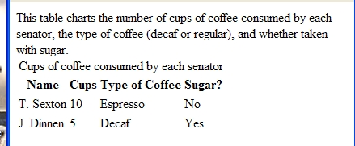

Torna alla pagina di Tecnologie Web
:: Appello d'Esame di Tecnologie Web - 12/02/2008 ::
Esercizio 1
Considerando la seguente dichiarazione di schema:
<?xml version="1.0" encoding="UTF-8"?>
<xs:schema xmlns:xs="http://www.w3.org/2001/XMLSchema"
elementFormDefault="qualified">
<xs:element name="SigmodRecord">
<xs:complexType>
<xs:sequence minOccurs="0" maxOccurs="unbounded">
<xs:element ref="issue"/>
</xs:sequence>
</xs:complexType>
</xs:element>
<xs:element name="article">
<xs:complexType>
<xs:sequence>
<xs:element ref="title"/>
<xs:element ref="initPage"/>
<xs:element ref="endPage"/>
<xs:element ref="authors"/>
</xs:sequence>
</xs:complexType>
</xs:element>
<xs:element name="articles">
<xs:complexType>
<xs:sequence minOccurs="0" maxOccurs="unbounded">
<xs:element ref="article"/>
</xs:sequence>
</xs:complexType>
</xs:element>
<xs:element name="author">
<xs:complexType>
<xs:simpleContent>
<xs:extension base="xs:string">
<xs:attribute name="position" type="xs:string"/>
</xs:extension>
</xs:simpleContent>
</xs:complexType>
</xs:element>
<xs:element name="authors">
<xs:complexType>
<xs:sequence minOccurs="0" maxOccurs="unbounded">
<xs:element ref="author"/>
</xs:sequence>
</xs:complexType>
</xs:element>
<xs:element name="endPage" type="xs:string"/>
<xs:element name="initPage" type="xs:string"/>
<xs:element name="issue">
<xs:complexType>
<xs:sequence>
<xs:element ref="volume"/>
<xs:element ref="number"/>
<xs:element ref="articles"/>
</xs:sequence>
</xs:complexType>
</xs:element>
<xs:element name="number" type="xs:string"/>
<xs:element name="title" type="xs:string"/>
<xs:element name="volume" type="xs:string"/>
</xs:schema>
1.a Commentate la dichiarazione iniziale del documento.
SOLUZIONE
Nella prima riga è presente la tipica dichiarazione dei documenti XML dove vengono indicati codifica e versione, infatti questo è un documento XML Schema e come tale è anche documento XML quindi necessita della tipica dichiarazione XML.
Inoltre è presente l'elemento radice fondamentale per qualsiasi XML Schema cioè xs: schema dove all'interno troviamo due attributi:
- xmlns:xs="http://www.w3.org/2001/XMLSchema": ci dice che a questo documento verranno applicate le regole dello standard W3C
- elementFormDefault="qualified": indica che gli elementi usati nei documenti XML conformi a questo schema, hanno nomi qualificati.
1.b Scrivete un istanza XML valida rispetto allo schema.
SOLUZIONE
<?xml version="1.0" encoding="UTF-8"?>
<SigmodRecord>
<issue>
<volume>Volume 1</volume>
<number>1</number>
<articles>
<article>
<title>Articolo 1 Volume 1</title>
<initPage>1</initPage>
<endPage>10</endPage>
<authors>
<author position="posizione bla bla"> autore </author>
<author position="posizione bla bla"> autore </author>
</authors>
</article>
<article>
<title>Articolo 2 Volume 1</title>
<initPage>11</initPage>
<endPage>20</endPage>
<authors>
<author position="posizione bla bla"> autore </author>
<author position="posizione bla bla"> autore </author>
</authors>
</article>
</articles>
</issue>
<issue>
<volume>Volume 2</volume>
<number>2</number>
<articles>
<article>
<title>Articolo 1 Volume 2</title>
<initPage>1</initPage>
<endPage>10</endPage>
<authors>
<author position="posizione bla bla"> autore </author>
<author position="posizione bla bla"> autore </author>
</authors>
</article>
<article>
<title>Articolo 2 Volume 2</title>
<initPage>11</initPage>
<endPage>20</endPage>
<authors>
<author position="posizione bla bla"> autore </author>
<author position="posizione bla bla"> autore </author>
</authors>
</article>
<article>
<title>Articolo 3 Volume 2</title>
<initPage>21</initPage>
<endPage>30</endPage>
<authors>
<author position="posizione bla bla"> autore </author>
<author position="posizione bla bla"> autore </author>
</authors>
</article>
</articles>
</issue>
</SigmodRecord>
Esercizio 2
Considerate il seguente documento HTML:
<!DOCTYPE html PUBLIC "-//W3C//DTD XHTML 1.0 Transitional//EN"
"http://www.w3.org/TR/xhtml1/DTD/xhtml1-transitional.dtd">
<html>
<head>
<META http-equiv="Content-Type" content="text/html; charset=ISO-8859-1">
<title>TABLE</title>
</head>
<body>
<table>
<caption>Cups of coffee consumed by each senator</caption>
<summary>This table charts the number of cups
of coffee consumed by each senator, the type
of coffee (decaf or regular), and whether
taken with sugar.</summary>
<tbody>
<tr>
<th>Name</th>
<th>Cups</th>
<th>Type of Coffee</th>
<th>Sugar?</th>
</tr>
<tr>
<td>T. Sexton</td>
<td>10</td>
<td>Espresso</td>
<td>No</td>
</tr>
<tr>
<td>J. Dinnen</td>
<td>5</td>
<td>Decaf</td>
<td>Yes</td>
</tr>
</tbody>
</table>
</body>
</html>
2.a Riproducente approssimativamente la pagina riprodotta da un browser.
SOLUZIONE

2.b Citate quanti più attributi dell’elemento TABLE conoscete compatibili con la dichiarazione del documento.
SOLUZIONE
- align
- bgcolor
- border
- cellpadding
- cellspacing
- class
- dir
- title
- width
Esercizio 3
3a. Spiegate cos’è la codifica UTF e con quali scopi fu introdotta.
SOLUZIONE
Lo standard Unicode definisce tre codifiche (UTF-8, UTF-16, UTF-32).
Queste codifiche consentono ad uno stesso dato di essere trasferito utilizzando un vocabolario basato su 1, 2 o 4 byte.
- UTF-8: molto utilizzato nel Web, mantiene la stessa codifica dei caratteri ASCII quindi può essere utilizzato anche su vecchie applicazioni.
- UTF-16: utilizzato quando si vuole bilanciare l’uso della memoria con la velocità di accesso ai dati, i caratteri sono codificati da una coppia di byte.
- UTF-32: utilizzato quando non si hanno problemi di memoria o per vocaboli poco frequenti, ogni carattere è codificato da 4 byte.
È stato introdotto per permettere che il criterio di associazione di un blocco di bit ad un carattere di un alfabeto non sia ambiguo. Infatti prima: alfabeti diversi -> codifiche diverse.
3b. Spiegate l’utilità dello spazio dei nomi (namespace) nei linguaggi di marcatura.
SOLUZIONE
I Namespaces in XML hanno due scopi:
- servono a distinguere tra elementi ed attributi con lo stesso nome, appartenenti ad applicazioni XML differenti. Per esempio, il titolo di un libro e il titolo della pagina Web in una pagina che descrive i libri.
- servono a raggruppare assieme tutti gli elementi e gli attributi di un'applicazione XML correlati fra loro in modo che il software possa distinguerli più facilmente.
E' insomma un metodo per definire elementi ed attributi, usato da XML per associarli ad un URI. Quindi gli elementi e gli attributi associati allo stesso URI si trovano nello stesso namespace. E' supportato da XML Schema, non da DTD.
I namespaces evitano ambiguità concatenando i nomi degli elementi con quelli di URL (che sono univoci).
Esempio:
<xs:schema xmlns:xs=“http://www.w3c.org/2001/XMLSchema”
targetNamespace=“http://www.mioindirizzo.org”
elementFormDefault=“qualified”>
Il seguente frammento indica che gli elementi e i datatype usati nello schema (schema, element, complexType, sequence) appartengono al namespace http://www.w3c.org/2001/XMLSchema
Esercizio 4
JSTL: cos’è, vantaggi, svantaggi. Elencare i quattro fondamentali insiemi di tag che caratterizzano tale libreria, specificando per ognuno la funzione per cui tali tag vanno usati.
SOLUZIONE
JSLT serve per ampliare le funzionalità delle nostre pagine. Sono Custom Tag Library la cui forma o uso è stato standardizzato.
Vantaggi:
- si utilizza meno codice Java nella JSP
- soluzioni standardizzate per funzionalità comuni
Svantaggi:
- si perde efficienza perché si aggiunge un livello tra la pagina JSP e il codice compilato
- essendo una tecnologia recente, mostra qualche problema di compatibilità.
Quattro fondamentali insiemi di tag:
- core: per definire alcune delle funzionalità più comuni come iterazioni, condizioni, loop.
- fmt: per formattare numeri e date.
- xml: per accedere e manipolare documenti XML.
- sql: per eseguire query SQL su un database (meglio utilizzarlo quando non ci si interfaccia con l’esterno).
Esercizio 5
Cos’è lo scope di una variabile in una pagina JSP? Quali scope predefiniti conosci?
SOLUZIONE
Lo scope di una variabile è il suo ambito di esistenza, cioè da dove posso accedere a tale variabile.
Gli scope predefiniti sono oggetti ai quali possiamo “legare” altri oggetti (attraverso dei metodi) durante l’esecuzione dell’applicazione.
Sono quattro:
- Page: (oggetto di classe Page Context) gli oggetti esistono soltanto durante l’esecuzione della pagina JSP stessa. Con page posso accedere agli altri oggetti impliciti(request, response...)[solo jsp].
- Request: (oggetto di classe HttpServletRequest) gli oggetti esistono per tutte le servlet che devono rispondere alla richiesta [servlet+JSP].
- Session: (oggetto di classe HttpSession) gli oggetti esistono fino a quando il container distrugge la sessione [servlet+JSP].
- Application: (oggetto di classe Servlet Context) gli oggetti possono essere utilizzati da tutte le pagine della nostra applicazione, esistono fino a quando l’applicazione viene mantenuta attiva dal container [servlet+JSP].
Esercizio 6
Spiegare lo scopo e commentare dettagliatamente il seguente codice. Mostrare un esempio di output, inventando i dati delle informazioni visualizzate.
<%@ taglib uri="http://java.sun.com/jsp/jstl/core" prefix="c"%>
<%@ taglib uri="http://java.sun.com/jsp/jstl/xml" prefix="x"%>
<%@ taglib prefix="fmt" uri="http://java.sun.com/jsp/jstl/fmt" %>
<jsp:useBean id="oggi" class="Controlli.Data"/>
<c:set var="fileXML"><jsp:getProperty name="oggi" property="fileSettimana"/></c:set>
<c:import var="xmlSource" url="${fileXML}" />
<x:parse var="xml" doc="${xmlSource}" />
<div id="testo">
<fmt:parseDate var="dStart" pattern="yyyy-MM-dd">
<x:out select="$xml//periodo/start"/></fmt:parseDate>
<fmt:parseDate var="dStop" pattern="yyyy-MM-dd">
<x:out select="$xml//periodo/stop"/></fmt:parseDate>
<h1>
Programmazione dal <fmt:formatDate value="${dStart}" pattern="dd/MM/yyyy"/>
al <fmt:formatDate value="${dStop}"
pattern="dd/MM/yyyy"/>
</h1>
<x:forEach select="$xml//Film" var="f">
<c:set var="tFilm" >
<x:out select="titolo" />
</c:set>
<h2><c:out value="${tFilm}" /></h2>
<table>
<tr>
<td>
<c:set var="img" >
<x:out select="pathImg" />
</c:set>
<img src="${img}" width="150px" height="215px" alt="${tFilm}"/>
<c:set var="fId" >
<x:out select="@idFilm" />
</c:set>
</td>
<td>
<table>
<c:forTokens items="Lu, Ma, Me, Gi, Ve, Sa, Do" delims="," var="giorno" >
<tr class="giornoSpettacolo">
<td>
<b><c:out value="${giorno}" /></b>
</td>
<x:forEach select="$xml//Spettacolo[(giorno = $giorno) and (@idFilm = $fId)]" var="s">
<td class="spettacolo">
<fmt:parseDate var="orario" pattern="HH:mm:ss">
<x:out select="ora"/>
</fmt:parseDate>
ore <fmt:formatDate value="${orario}" pattern="HH:mm"/><br/>
sala <x:out select="@idSala"/><br/>
tariffa <x:out select="@idTariffa"/>
</td>
</x:forEach>
</tr>
</c:forTokens>
</table>
</td>
</tr>
</table>
</x:forEach>
</div>
SOLUZIONE
Lo scopo di questo codice è quello di andare ad eseguire un parsing di un documento XML che contiene i dati della programmazione settimanale di vari film; una volta presi i dati stamparli in una tabella html, inserendo anche la locandina del film, in base al giorno della settimana, inserendo anche l'orario, la sala e la tariffa del film.
Prima di tutto vengono importate le tre librerie JSTL necessarie per utilizzare Core, Xml e fmt.
Tramite l'azione Javabean standard <jsp:usebean> viene associata la classe controlli.data, contenuta nel javabean, all'oggetto "oggi". Con l'altra azione standard <jsp:getProperty> viene preso il valore di fileSettimana.
Viene importato il fileXML e ne viene effettuato il parsing.
Viene fatto un parsing e viene selezionata e stampata a video la data iniziale di programmazione e quella finale; quando vengono stampate a video le due date hanno il formato giorno-mese-anno.
Vengono selezionati tutti i film presenti nel documento XML quindi ne viene stampato il titolo e mostrata la locandina con certi valori di altezza e larghezza. Inoltre viene preso il valore dell'attributo idFilm e messo nella variabile fId.
Tramite il fortTokens viene stampata una tabella html contenente, per ogni colonna della prima riga, i vari giorni della settimana in formato: lu, ma, me, gi, ve, sa, do.
Tramite un forEach viene controllato che gli id dei film ed i giorni corrispondano e quindi vengono stampate a video l'ora(in formato ora-minuti), la sala e la tariffa del film.
Torna alla pagina di Tecnologie Web